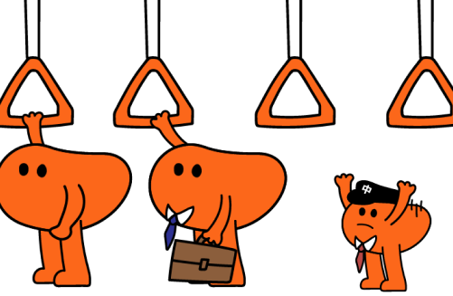
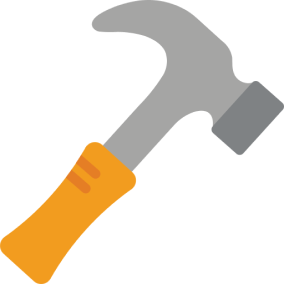
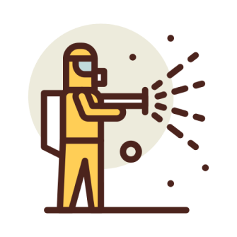

많이
불편하셨죠?
'이번역'은 여러분들의
편의를 우선시 합니다.

걱정하지 않아도 돼요.
카메라와 초음파 센서가
여러분의 키를 측정하고,
손잡이를 내려줄거예요.
지금 무슨 역이냐고요?
번거롭게 두리번 거리지
않아도 괜찮아요.
앞만 보고 가요.
이런 것도
할 수 있어요
손잡이가 손잡이의 역할만 하지는 않아요.
여러가지 기능들을 남몰래 숨기고 있죠.

비상용 해머
지하철에서도 무슨 일이 벌어질 지 아무도 몰라요.
화재가 발생하거나, 갑자기 지하철 안에 갇힐 수도 있겠죠.
그럴 때를 대비해서 손잡이를 망치로 만들었어요.
소독 시스템
손잡이 잡기 찝찝하다고요? 아무럼요.
세균감지가 많이 될 때 자동적으로 손잡이가 돌아가
소독해줄거예요. 안심하고 잡아도 돼요.

이 프로젝트는 InputOutputTeam에 의해 만들어졌습니다.
팀원 : 김민성 , 김민주, 전혜주, 안예성, 이예흔